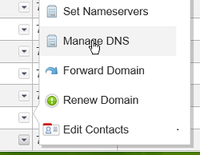
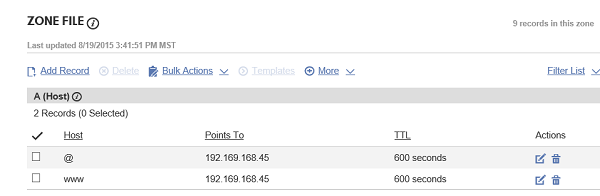

Redirect www to Non-www with Apache - Debian
Difficulty: 2
Time: 15
Let's assume that have a domain with and without the "www" prefix. www.coolexample.com and coolexample.com. Both of them display the same content. A permanent redirect, or "301 Redirect," is the type of redirect where you would be redirecting your users from one domain to the other.
This article walks you through the process of setting up redirects on a Debian system.
Prerequisite
You must have Initial Server Setup done on your server and installed Apache. If you haven't installed it yet, do the following to install it.
sudo apt-get update
sudo apt-get install apache2
Configure DNS Records
For this article we'll use a COMPANY_NAME domain.
-
Assuming that you have a domain with COMPANY_NAME, log into the account manager page.
- Click Manage in the Domains section.

-
This will take you to the list of domains you have with COMPANY_NAME. Click the drop down button on the domain that you want to work with and click on MANAGE DNS.

If you don't see a record for your domain, create one. You should also create another A record or CNAME record with the hostname "www" in the HOST field. Make sure to type in the IP address of your server in the POINTS TO field.
Here's how both the records will look like:

You should now be able to access both the www and non-www domains of your server.
Enable Rewrite and create .htaccess
We will make use of .htaccess file to hold our redirect rules. To configure Apache with the redirect information, you need to enable the mod_rewrite module.
-
Enable
mod_rewrite:
sudo a2enmod rewrite
- Open the configuration file.
sudo vim /etc/apache2/sites-enabled/000-default
In the configuration block that corresponds to the DocumentRoot (in this case, that's /var/www/) replace AllowOverride None with AllowOverride All.
The Directory section will look something like this:
<Directory /var/www/>
Options Indexes FollowSymLinks MultiViews
AllowOverride All
Order allow,deny
allow from all
</Directory>
If your Options line is in its own Directory block, be sure to change the AllowOverride for that as well.
Here's an example of how that might look:
DocumentRoot /var/www
<Directory />
Options FollowSymLinks
AllowOverride All
</Directory>
<Directory /var/www/>
Options Indexes FollowSymLinks MultiViews
AllowOverride All
Order allow,deny
allow from all
</Directory>- Save and exit the file.
-
Restart Apache for the changes to take effect.
sudo service apache2 restart
-
Navigate into the DocumentRoot directory in this case
/var/www/
cd /var/www/
-
Create a .htaccess file to enter the redirection information. There are two options. We will take a look at both.
sudo vim .htaccess
Redirect www to non-www
-
If you want to redirect from www to non www, type in the below block of text in the .htaccess file.
RewriteEngine On
RewriteBase /
RewriteCond %{HTTP_HOST} ^www\.(.*)$ [NC]
RewriteRule ^(.*)$ http://%1/$1 [R=301,L]
Save and exit the file.
If you are using HTTPS, you need to replace http with https in the last line RewriteRule
-
To validate your redirection
curl your domain name.
curl -I www.coolexample.com
You will see the following displayed on the console:
HTTP/1.1 301 Moved Permanently
Date: Thu, 20 Aug 2015 21:18:33 GMT
Server: Apache/2.4.7 (Debian)
Location: http://coolexample.com/
Content-Type: text/html; charset=iso-8859-1
-
You can also verify this by navigating to www.coolexample.com on your browser and you will be redirected to coolexample.com
Redirect non-www to www
-
If you want to redirect from www to non-www, type in the below block of text in the .htaccess file.
RewriteEngine On
RewriteBase /
RewriteCond %{HTTP_HOST} !^www\. [NC]
RewriteRule ^(.*)$ http://www.%{HTTP_HOST}/$1 [R=301,L]
Save and exit.
If you are using HTTPS, you need to replace http with https in the last line RewriteRule
-
To validate your redirection
curl your domain name.
curl -I coolexample.com
You will see the following displayed on the console:
HTTP/1.1 301 Moved Permanently
Date: Thu, 20 Aug 2015 21:20:33 GMT
Server: Apache/2.4.7 (Debian)
Location: http://www.coolexample.com/
Content-Type: text/html; charset=iso-8859-1
-
You can also verify this by navigating to http://coolexample.com on your browser and you will be redirected to www.coolexample.com
Next steps
Congratulations! You have succesfully created a permanent redirect with Apache on your Debian system.